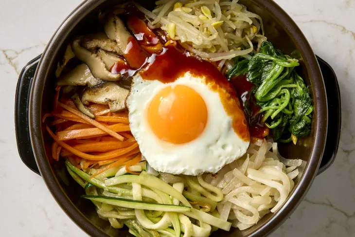

Bibimbap

Description
A traditional dish in Korean cuisine, with rice and a combination of vegetables and/or meat.
Ingredients
- 1 lb fresh Shiitake Mushrooms
- 3 medium Carrots
- 2-3 Korean gray or small Zucchini Squash
- 1 lb Korean or Daikon Radish
- 4 1/2 tsp Kosher Salt, divided
- 1 lb spinach (not baby spinach)
- 3 Garlic Cloves, divided
- 5 tbsp + 1 tsp toasted Sesame Oil, divided
- 12 oz Soybean or Mung Bean Sprouts (about 4 cups)
- 5 tbsp Neutral Oil, such as Canola or Vegetable, divided
- 1/3 cup Water + more for blanching the spinach and cooking the sprouts
- 1 tbsp Soy Sauce
- 3 tbsp Gochujang
- 2 tbsp Mirin
- 1 tbsp Honey
- 4-6 large Eggs (1 per serving)
- 4-6 cups hot cooked White Rice (1 cup per serving)
- toasted Sesame Seeds (for garnish)
Steps
- Prepare the following, placing each ingredient into a separate pile on a baking
sheet as you complete it: Trim the stems from 1 pound fresh shiitake mushrooms
and cut into 1/4-inch-thick slices (about 6 cups); peel and cut 3 medium carrots
into matchsticks (about 2 cups); cut 3 Korean or zucchini squash into matchsticks
(about 3 cups); peel and cut 1 pound Korean or daikon radish crosswise into thin
rounds, then stack them together and cut into matchsticks (about 4 cups).
- Bring a large saucepan filled three-quarters full with water to a boil over
medium-high heat. Add 1 teaspoon of the kosher salt and 1 pound spinach in 2
batches. Cook, stirring occasionally, until wilted, about 2 minutes.
- Drain the spinach. When cool enough to handle, grab handfuls of the spinach,
squeeze out as much water as possible, and place in a small bowl. Finely grate
1 of the garlic cloves on a Microplane onto the spinach. Season with 1/2
teaspoon of the kosher salt and drizzle with 1 tablespoon of the toasted
sesame oil. Mix with your hands until combined.
- Fill the now-empty saucepan three-quarters full with water and bring to a
boil over medium-high heat. Add 1 teaspoon of the kosher salt and 12 ounces
soybean sprouts. Cover and simmer, reducing the heat as needed, for 20 minutes.
Meanwhile, cook the remaining vegetables.
- Heat 1 tablespoon of the neutral oil in a large nonstick frying pan or cast
iron skillet over medium-high heat until shimmering. Add the carrots and 1/2
teaspoon of the kosher salt. Stir-fry until brighter in color and crisp-tender,
2 to 3 minutes. Return to the baking sheet. Wipe out the pan with paper towels.
- Heat 1 tablespoon of the neutral oil in the same pan over medium-high heat until
shimmering. Add the squash and 1/2 teaspoon of the kosher salt. Stir-fry until
crisp-tender, 2 to 3 minutes. Return to the baking sheet. Wipe out the pan with paper towels.
- Heat 1 tablespoon of the neutral oil in the same pan over high heat until shimmering.
Add the mushrooms, 1 tablespoon soy sauce, and 1 teaspoon of the toasted sesame oil.
Finely grate 1 of the garlic cloves over the mushrooms. Stir-fry until the mushrooms
are charred in spots, 4 to 5 minutes. Return to the baking sheet. Wipe out the pan with paper towels.
- Heat 1 tablespoon of the neutral oil over medium-high heat until shimmering.
Add the radish, 1/2 teaspoon of the kosher salt, and 1/3 cup water. Cook,
stirring occasionally, until the radish is translucent and tender but not
browned, 8 to 10 minutes. When the radish is almost ready, add 1 tablespoon
of the toasted sesame oil and stir-fry for 1 minute more. Return to the
baking sheet and reserve the frying pan.
- When the soybean sprouts are ready, drain and transfer to a medium bowl.
Finely grate the remaining garlic clove over the sprouts. Season with the
remaining 1/2 teaspoon kosher salt and drizzle with 1 tablespoon of the
toasted sesame oil. Mix with your hands until combined.
- Place 3 tablespoons of gochujang, the remaining 2 tablespoons toasted
sesame oil, 2 tablespoons mirin, and 1 tablespoon honey in a small bowl
and whisk to combine.
- Wipe out the reserved frying pan with a paper towel. Heat the remaining
1 tablespoon neutral oil in the pan over medium heat until shimmering.
Swirl the pan to coat the bottom with the oil. Crack 4 to 6 large eggs
into the pan, spacing them evenly apart. Reduce the heat to low. Cover
and cook undisturbed until the whites are set and the yolks are still
runny, 2 1/2 to 3 1/2 minutes.
- While the eggs are cooking, start to assemble the bibimbap. For each
serving, place 1 cup hot cooked rice in a bowl. Divide and arrange the
spinach, mushrooms, carrots, squash, sprouts, and radish in separate piles on the rice.
- Top each bowl with a fried egg and sprinkle with toasted sesame seeds.
Drizzle each bowl with 1 to 2 tablespoons of the gochujang sauce and
serve any remaining sauce on the side.
Home